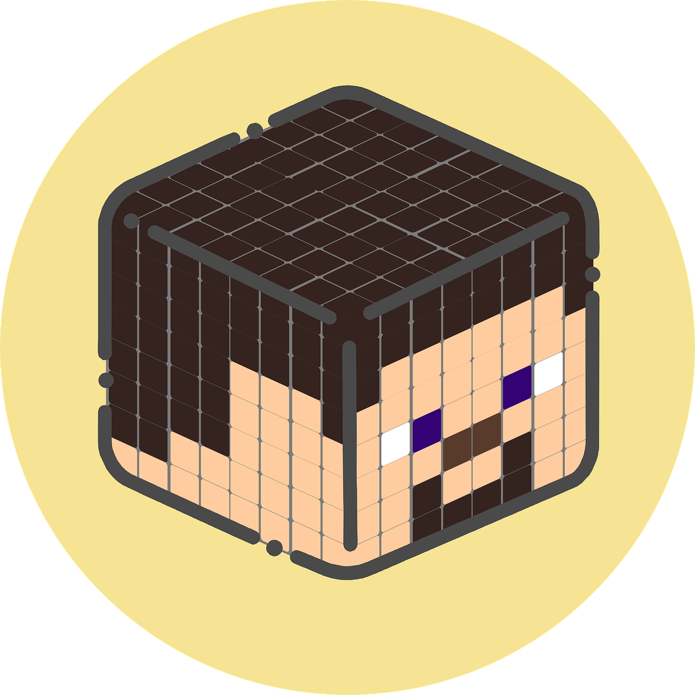
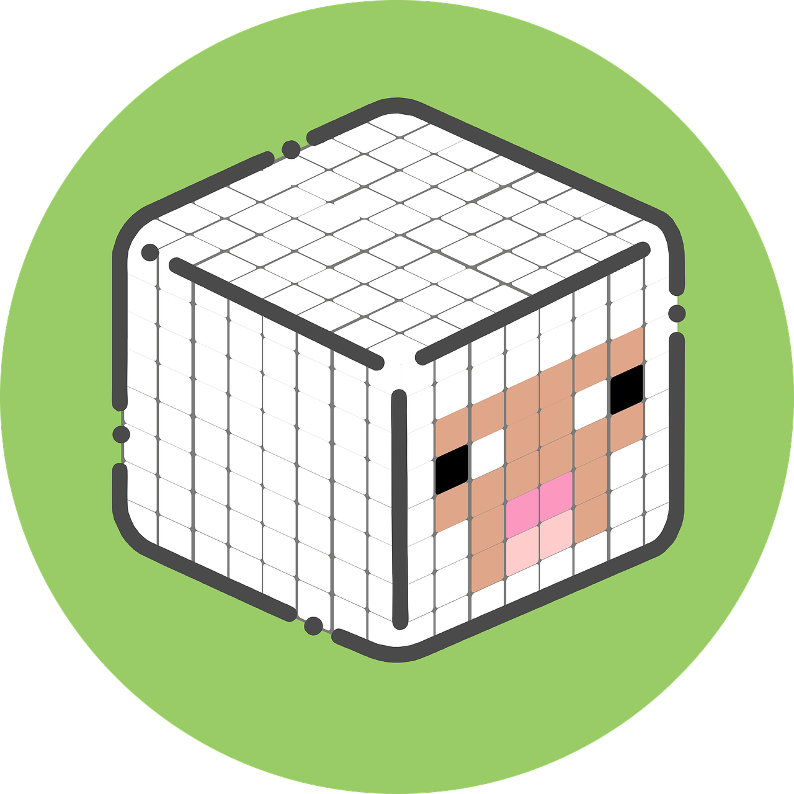

Reglas y Condiciones del servidor
Reglas Steve
Las reglas Steve son reglas morales, cumpliendose obligatoriamente durante el periodo que se encuentre activo el servidor (indefinido).
-No esta permitida la mala conducta, de lo contrario si se te informa al admin serás PERMABANEADO/A.
-El admin no es intocable, pero se debe respetar lo que va fuera de rol.
Reglas Creeper

Las reglas Creeper son aquellas reglas relacionadas con el Griefing o simplemente el sabotaje a un player de estadía en Chill&Craft.
-Esta permitido raidear, pues contamos con SecurityCraft, el cual permite crear bases más seguras con cámaras, trampas y torretas (solo tú decides quien es tu enemigo).
-No está permitido el hacer explosiones masivas con TNT, o quemar bosques de forma intencional (esto afectará de forma excesiva al rendimiento del servidor).
Condiciones Sheep
Las Condiciones Sheep son aquellas que te informan de los problemas que podrían suceder durante tu estadía en Chill&Craft. (problemas tecnicos)
*Entender que todo podría funcionar MUY MAL ya que no hay experiencia de por medio. Es un servidor para invitados, no hay producción, solo el admin intentando hacer algo entretenido):
*Servidor hosteado en un PC local. Esto quiere decir que cualquier corte de luz, caída de internet hará que el servidor deje de funcionar temporalmente (hasta que vuelva).
*El servidor intentará estar abierto 24/7, se informará en casos de mantenimiento o cierre temporal (se informará por discord cualquier actividad especial).